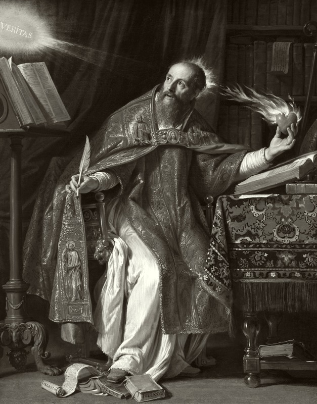

晚期罗马帝国北非希波的主教，西方基督教神学与哲学的开端性人物。他从迦太基的修辞学教师、摩尼教的听众，到米兰花园中皈依的忏悔者，最后成为与多纳图派、佩拉纠派论战不休的教父。他把柏拉图主义与《圣经》熔于一炉：原罪与恩典、自由与时间、上帝之城与地上之城——几乎所有后世西方哲学的问题，都在他那里第一次被以"内心"的方式说出。
奥古斯丁思想的起点不是"世界是什么"，而是"我如何被罪、恩典与时间所塑造"。他第一次把哲学的目光从宇宙转向"灵魂的内在"，把信仰、意志、记忆与时间纳入一个宏大的忏悔式框架。以下六个概念构成其思想骨架——从原罪出发，穿过恩典与自由意志的争辩、三位一体的思辨、时间之谜，最终落到上帝之城与地上之城的对观。点击卡片进入详细解读。
亚当的堕落使整个人类陷入罪的"团块"——罪不是个别行为，而是存在的处境。人无时不刻不在罪的惯性之中。
人无法靠自身挣脱罪的捆绑；恩典是上帝白白赐予的内在力量，它先于意志、唤醒意志、成全意志。
意志在起初是自由的，堕落之后"不能不犯罪"；真正的自由不是为所欲为，而是被恩典扶正后的爱善。
圣父、圣子、圣灵三个位格，同一本体。奥古斯丁用记忆、理解、意志的"内在三位一体"来类比。
"时间是什么？没有人问我，我知道；一旦要我解释，我却不知道。"时间是心灵的延展（distentio animi）。
爱上帝而超越自我的"天上之城"与爱己至轻看上帝的地上之城，从创世一直争斗到末日——罗马的陷落不是悲剧，而是历史的意义所在。
奥古斯丁的著作横跨自传、神学、伦理与历史——从直白忏悔的《忏悔录》，到与佩利纠派论战的长篇《论自由意志》与《论恩典与自由意志》，再到《论三位一体》的深层思辨与《上帝之城》的宏大史观。每部均含详细解读。
以祷告形式写给上帝的"自传"：从童年的罪到米兰花园的皈依，后半部转向记忆、时间与创造之谜——西方第一部"内心之书"。
与埃沃迪乌斯的对话：若上帝善、人为何有恶？恶不是实存而是善的缺乏；意志在自由与恩典之间的位置在此奠基。
西方三位一体教义的经典文本：从圣经出发论证同体三格，又以内心的记忆—理解—意志作为"三合一"的类比，把思辨与祈祷融为一体。
回应"罗马陷落是基督教的罪过"之指责：人类历史是两座城——爱神之爱与爱己之城——的争斗，直到末日审判。
他在生命末年为全部著作写下的审阅录——逐书"再考虑、再修正"。这一"自我审查"的举动本身就是奥古斯丁式内心的最彻底表现。
不要被"13卷"吓倒：前九卷是叙事性的自传，读起来像小说；核心的哲学转折在第11卷"时间是什么"。先读前九卷把握一个灵魂如何从享乐、摩尼教走向皈依——一切抽象概念都在这里获得血肉。
第11卷关于时间的著名讨论（"时间是什么"）与第10卷关于记忆的探索，是全书哲学含量最高的部分。把它们读透，奥古斯丁作为"第一个现代人"的形象就立起来了——他面对的不是天体，而是心灵。
《论自由意志》篇幅适中，是理解"恶—意志—恩典"三角关系的门径；《论三位一体》更难，但其中用心灵自我类比三格的思想深刻影响后世整个"内在性"哲学。这两部合起来，是理解奥古斯丁神学主干的必经之路。
《上帝之城》是史观与政治的奥古斯丁——从第1卷"罗马陷落"的争议写到第19卷"两城的和平"。之后可顺流而下：中世纪安瑟伦、阿奎那都从他那取法；笛卡尔的"我思"、海德格尔的时间分析、乃至现代"内心转向"的哲学都源于此。
本站是为系统学习奥古斯丁哲学而做的导读。内容以概念为骨架、以著作为血肉——概念页展开每个核心命题的定义、阐述、实例与延伸思考；著作页逐部解读背景、核心论点、结构与关键段落；生平页还原一个在北非、罗马与米兰之间辗转的灵魂；名言页提供直接感受其语言与祷告的入口。
奥古斯丁是西方哲学史上第一个把"内心"作为哲学剧场的人。他问的不是"世界如何运动"，而是"我的心为何不宁"——并把这个问题与上帝、罪、时间、历史连接起来。他的思想不是结论的仓库，而是一场永不停息的忏悔：关于自我认识、关于恩典、关于爱。
本站所有引文若为概括性转述，均标注"意译"；书名保留拉丁文原名以便查证。后续将持续扩充内容——新增概念卡片将直接追加到概念页，无需改动其他页面。